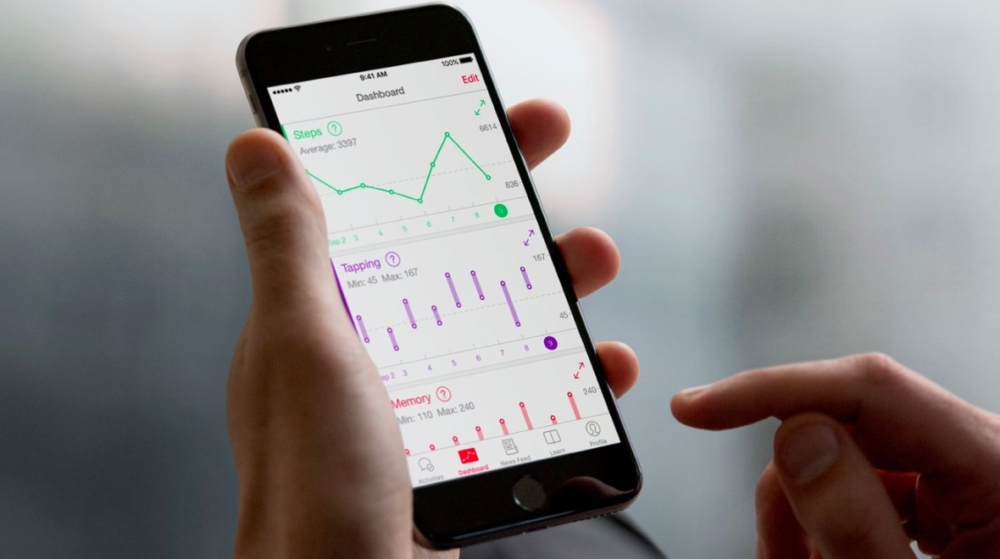

<ion-view view-title="News Article">
    <ion-content>
        <a href="#/app/news">
            <button class="button button-block button-royal icon-left ion-chevron-left">
                News &amp; Updates
            </button>
        </a>

        <h2>Rare Genomics Institute Launches a New Personalized Medical Research Platform</h2>

        

        <p>Service features pro bono, patient-centric, consulting from cutting-edge scientists and medical experts. Service features pro bono, patient-centric, consulting from cutting-edge scientists and medical experts. Service features pro bono, patient-centric, consulting from cutting-edge scientists and medical experts. Service features pro bono, patient-centric, consulting from cutting-edge scientists and medical experts. Service features pro bono, patient-centric, consulting from cutting-edge scientists and medical experts. Service features pro bono, patient-centric, consulting from cutting-edge scientists and medical experts. Service features pro bono, patient-centric, consulting from cutting-edge scientists and medical experts. Service features pro bono, patient-centric, consulting from cutting-edge scientists and medical experts. Service features pro bono, patient-centric, consulting from cutting-edge scientists and medical experts. Service features pro bono, patient-centric, consulting from cutting-edge scientists and medical experts. Service features pro bono, patient-centric, consulting from cutting-edge scientists and medical experts. Service features pro bono, patient-centric, consulting from cutting-edge scientists and medical experts. Service features pro bono, patient-centric, consulting from cutting-edge scientists and medical experts. Service features pro bono, patient-centric, consulting from cutting-edge scientists and medical experts. Service features pro bono, patient-centric, consulting from cutting-edge scientists and medical experts. Service features pro bono, patient-centric, consulting from cutting-edge scientists and medical experts. Service features pro bono, patient-centric, consulting from cutting-edge scientists and medical experts. </p>
    </ion-content>
</ion-view>
